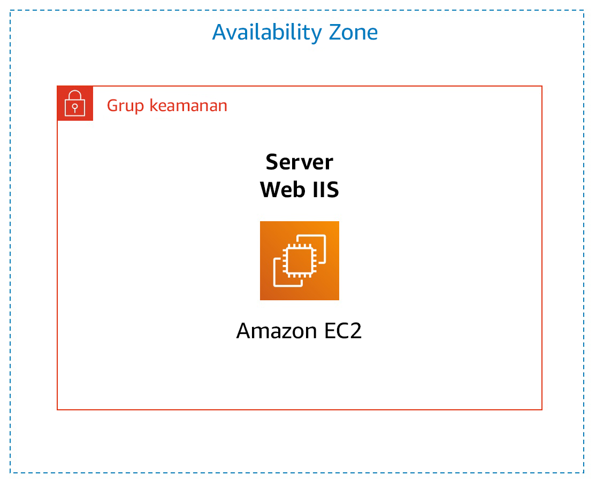

Lab 3: Pengantar Amazon EC2
Versi 1.1.7 (spl200)
Ikhtisar

Lab ini memberi Anda ikhtisar dasar dalam meluncurkan, mengubah ukuran, mengelola, dan memantau instans Amazon EC2.
Amazon Elastic Compute Cloud (Amazon EC2) adalah layanan web yang menyediakan kapasitas komputasi yang ukurannya dapat diubah di cloud. Layanan ini dirancang untuk mempermudah komputasi cloud berskala web untuk pengembang.
Antarmuka layanan web sederhana Amazon EC2 ini memungkinkan Anda memperoleh dan mengonfigurasi kapasitas dengan sedikit gesekan. Ini menyediakan Anda dengan kontrol penuh dari sumber daya komputasi Anda dan memungkinkan Anda berjalan di lingkungan komputasi Amazon yang terbukti. Amazon EC2 mengurangi waktu yang diperlukan untuk mendapatkan dan melakukan boot instans server baru ke menit, memungkinkan Anda meningkatkan atau mengurangi skala kapasitas, ketika kebutuhan komputasi Anda berubah.
Amazon EC2 mengubah ekonomi komputasi dengan memungkinkan Anda membayar hanya untuk kapasitas yang benar-benar Anda gunakan. Amazon EC2 menyediakan pengembang alat untuk membangun aplikasi yang tahan terhadap kegagalan dan mengisolasinya dari skenario kegagalan umum.
Topik yang dibahas
Pada akhir lab ini, Anda akan mampu:
- Meluncurkan server web dengan perlindungan penghentian diaktifkan
- Memantau instans EC2 Anda
- Memodifikasi grup keamanan yang menggunakan server web Anda untuk mengizinkan akses HTTP
- Mengubah ukuran instans Amazon EC2 Anda agar dapat diskalakan
- Menjelajahi batas EC2
- Menguji perlindungan penghentian
- Menghentikan instans EC2 Anda
Durasi
Diperlukan sekitar 35 menit untuk menyelesaikan lab ini.
Mengakses AWS Management Console
Di bagian atas instruksi ini, klik Start Lab (Mulai Lab) untuk meluncurkan lab Anda.
Panel Start Lab (Mulai Lab) terbuka dan menampilkan status lab.
Tunggu hingga Anda melihat pesan "Lab status: ready" (Status lab: siap), kemudian klik X untuk menutup panel Start Lab (Mulai Lab).
Di bagian atas instruksi ini, klik AWS
Tindakan ini akan membuka AWS Management Console di tab browser baru. Anda akan secara otomatis masuk ke sistem.
Tips: Jika tab browser baru tidak terbuka, biasanya akan ada banner atau ikon di bagian atas browser Anda yang menunjukkan bahwa browser Anda mencegah situs membuka jendela pop-up. Klik pada banner atau ikon dan pilih "Allow pop ups" ("Izinkan pop ups")
Atur tab AWS Management Console agar tampil di sebelah petunjuk ini. Idealnya, Anda akan dapat melihat kedua tab browser pada saat bersamaan, agar lebih mudah mengikuti langkah-langkah lab.
Tugas 1: Meluncurkan Instans Amazon EC2 Anda
Dalam tugas ini, Anda akan meluncurkan instans Amazon EC2 dengan perlindungan penghentian. Perlindungan penghentian mencegah Anda dari dengan sengaja mengakhiri instans EC2. Anda akan menerapkan instans Anda dengan skrip Data Pengguna yang akan memungkinkan Anda menerapkan web server sederhana.
- Di AWS Management Console pada menu Services (Layanan), klik EC2.
- Pilih Launch Instance (Luncurkan Instans), lalu pilih Launch Instance (Luncurkan Instans)
Langkah 1: Memilih Amazon Machine Image (AMI)
Amazon Machine Image (AMI) menyediakan informasi yang diperlukan untuk meluncurkan instans yang merupakan server virtual di cloud. AMI mencakup:
- Template untuk volume root pada instans (misalnya, sistem operasi, server aplikasi dengan aplikasi).
- Izin peluncuran yang mengontrol akun AWS mana yang dapat menggunakan AMI untuk meluncurkan instans
- Pemetaan perangkat blok yang menentukan volume yang akan dipasang ke instans saat diluncurkan
Daftar Quick Start (Mulai Cepat) berisi AMI yang paling umum digunakan. Anda juga dapat membuat AMI Anda sendiri atau memilih AMI dari AWS Marketplace, toko online tempat Anda dapat menjual atau membeli perangkat lunak yang berjalan pada AWS.
- Klik Select (Pilih) di sebelah Amazon Linux 2 AMI (di bagian atas daftar).
Langkah 2: Memilih Jenis Instans
Amazon EC2 menyediakan berbagai pilihan jenis instans yang dioptimalkan agar sesuai dengan kasus penggunaan yang berbeda. Jenis instans terdiri dari berbagai kombinasi CPU, memori, penyimpanan, dan kapasitas jaringan dan memberi Anda fleksibilitas untuk memilih campuran sumber daya yang sesuai untuk aplikasi Anda. Setiap jenis instans mencakup satu atau beberapa ukuran instans, yang memungkinkan Anda menskalakan sumber daya sesuai kebutuhan beban kerja target Anda.
Anda akan menggunakan instans t2.micro yang harus dipilih secara default. Jenis instans ini memiliki 1 CPU virtual dan memori 1 GiB. CATATAN: Anda mungkin dibatasi untuk menggunakan jenis instans lain di lab ini.
- Klik Next: Configure Instance Details (Selanjutnya: Konfigurasikan Detail Instans)
Langkah 3: Mengonfigurasi Detail Instans
Halaman ini digunakan untuk mengonfigurasi instans yang sesuai dengan kebutuhan Anda. Ini termasuk pengaturan jaringan dan pemantauan.
Network (Jaringan) menunjukkan Virtual Private Cloud (VPC) mana yang ingin Anda luncurkan ke instans. Anda dapat memiliki beberapa jaringan, misalnya, jaringan yang berbeda untuk pengembangan, pengujian, dan produksi.
Untuk Network (Jaringan), pilih Lab VPC.
Lab VPC dibuat menggunakan template AWS CloudFormation selama proses penyiapan lab Anda. VPC ini mencakup dua subnet publik dalam dua Availability Zone yang berbeda.
Untuk Enable termination protection (Aktifkan perlindungan penghentian), pilih Protect against accidental termination (Lindungi terhadap penghentian yang tidak disengaja).
Ketika instans Amazon EC2 tidak lagi diperlukan, instans bisa dihentikan, ini berarti bahwa instans dihentikan dan sumber dayanya dirilis. Instans yang dihentikan tidak bisa dimulai lagi. Jika Anda ingin mencegah instans dari dihentikan secara tidak sengaja, Anda dapat mengaktifkan perlindungan penghentian untuk instans, yang mencegahnya dari dihentikan.
- Gulir ke bawah, lalu buka Advanced Details (Detail Lanjutan).
Bidang untuk User data (Data pengguna) akan muncul.
Ketika Anda meluncurkan instans, Anda bisa meloloskan data pengguna ke instans yang dapat digunakan untuk melakukan tugas konfigurasi otomatis umum dan bahkan menjalankan skrip setelah instans dimulai.
Instans Anda menjalankan Amazon Linux, sehingga Anda akan menyediakan skrip shell yang akan berjalan ketika instans dimulai.
Salin perintah berikut dan tempel di bidang User data (Data pengguna):
#!/bin/bashyum -y install httpdsystemctl enable httpdsystemctl start httpdecho '<html><h1>Hello From Your Web Server!</h1></html>' > /var/www/html/index.htmlSkrip akan:
- Menginstal server web Apache (httpd)
- Mengonfigurasi server web untuk secara otomatis dimulai saat boot
- Mengaktifkan server Web
- Membuat halaman web sederhana
- Klik Next: Add Storage (Selanjutnya: Menambahkan Penyimpanan)
Langkah 4: Menambahkan Penyimpanan
Amazon EC2 menyimpan data pada disk virtual yang terpasang di jaringan yang disebut Elastic Block Store.
Anda akan meluncurkan instans Amazon EC2 menggunakan volume disk 8 GiB default. Ini akan menjadi volume root Anda (juga disebut sebagai volume 'boot').
- Klik Next: Add Tags (Selanjutnya: Menambahkan Tag)
Langkah 5: Menambahkan Tag
Tag memungkinkan Anda mengategorikan sumber daya AWS Anda dengan cara yang berbeda, misalnya, berdasarkan tujuan, pemilik, atau lingkungan. Tag berguna ketika Anda memiliki banyak sumber daya dari jenis yang sama - Anda dapat dengan cepat mengidentifikasi sumber daya tertentu berdasarkan tag yang telah Anda tetapkan pada sumber daya tersebut. Setiap tag terdiri dari Kunci dan Nilai, yang keduanya Anda tentukan.
Klik Add Tag (Tambah Tag), lalu konfigurasikan:
- Key: (Kunci:)
Name(Nama) - Value: (Nilai:)
Web Server(Server Web)
- Key: (Kunci:)
Klik Next: Configure Security Group (Selanjutnya: Mengonfigurasikan Grup Keamanan)
Langkah 6: Mengonfigurasikan Grup Keamanan
Grup keamanan bertindak sebagai firewall virtual yang mengontrol lalu lintas untuk satu atau beberapa instans. Ketika Anda meluncurkan instans, Anda mengaitkan satu atau beberapa grup keamanan dengan instans. Anda menambahkan aturan ke setiap grup keamanan yang mengizinkan lalu lintas ke atau dari instans yang terkait. Anda dapat mengubah aturan untuk grup keamanan setiap saat; aturan baru secara otomatis diterapkan ke semua instans yang dikaitkan dengan grup keamanan.
Pada Langkah 6: Konfigurasikan Grup Keamanan, konfigurasikan:
- Security group name: (Nama grup keamanan:)
Web Server security group(Grup keamanan Server Web) - Description: (Deskripsi:)
Security group for my web server(Grup keamanan untuk server web saya)
Di lab ini, Anda tidak akan masuk ke instans Anda menggunakan SSH. Menghapus akses SSH akan meningkatkan keamanan instans.
- Security group name: (Nama grup keamanan:)
Hapus aturan SSH yang ada.
Klik Review and Launch (Tinjau dan Luncurkan)
Langkah 7: Meninjau Peluncuran Instans
Halaman Tinjauan menampilkan konfigurasi untuk instans yang akan Anda luncurkan.
- Klik Launch (Luncurkan)
Jendela Select an existing key pair or create a new key pair (Pilih key pair yang ada atau buat key pair baru) akan muncul.
Amazon EC2 menggunakan kriptografi kunci publik untuk mengenkripsi dan mendekripsi informasi login. Untuk masuk ke instans Anda, Anda harus membuat key pair, menentukan nama key pair ketika Anda meluncurkan instans, dan menyediakan kunci privat ketika Anda terhubung ke instance.
Di lab ini Anda tidak akan masuk ke instans Anda, sehingga Anda tidak memerlukan key pair.
Klik drop-down Choose an existing key pair (Pilih key pair yang ada) dan pilih Proceed without a key pair (Lanjutkan tanpa key pair).
Pilih I acknowledge that ... (Saya mengakui bahwa ....)
Klik Launch Instances (Luncurkan Instans)
Instans Anda sekarang akan diluncurkan.
Klik View Instances (Tampilkan Instans)
Instans akan muncul dengan status tertunda , yang berarti sedang diluncurkan. Status kemudian akan berubah menjadi berjalan, yang menunjukkan bahwa instans telah memulai boot. Anda akan memerlukan beberapa saat sebelum dapat mengakses instans.
Instans menerima nama DNS publik yang dapat Anda gunakan untuk menghubungi instans dari Internet.
Anda Web Server (Server Web) harus dipilih. Tab Description (Deskripsi) menampilkan informasi terperinci tentang instans Anda.
Untuk melihat informasi selengkapnya di tab Deskripsi, seret pembagi jendela ke atas.
Tinjau informasi yang ditampilkan di tab Description (Deskripsi). Informasi ini mencakup jenis instans, pengaturan keamanan, dan pengaturan jaringan.
Tunggu instans Anda untuk menampilkan berikut:
- Instance State: (Status Instans:) running (berjalan)
- Status Checks: (Pemeriksaan Status:) 2/2 checks passed (lolos pemeriksaan 2/2)
Selamat! Anda telah berhasil meluncurkan instans Amazon EC2 pertama Anda.
Tugas 2: Memantau Instans Anda
Pemantauan merupakan bagian penting dari menjaga keandalan, ketersediaan, dan kinerja dari instans Anda Amazon Elastic Compute Cloud (Amazon EC2) dan solusi AWS Anda.
Klik tab Status Checks (Pemeriksaan Status).
Dengan pemantauan status instans, Anda dapat dengan cepat menentukan apakah Amazon EC2 telah mendeteksi masalah yang mungkin mencegah instans Anda dari menjalankan aplikasi. Amazon EC2 menjalankan pemeriksaan otomatis pada setiap instans EC2 berjalan untuk mengidentifikasi masalah perangkat keras dan perangkat lunak.
Perhatikan bahwa pemeriksaan System reachability (Jangkauan sistem) dan Instance reachability (Jangkauan instans) sudah lulus.
Klik tab Monitoring (Pemantauan).
Tab ini menampilkan metrik Amazon CloudWatch untuk instans Anda. Saat ini, tidak banyak metrik untuk ditampilkan karena instans baru saja diluncurkan.
Anda dapat mengklik grafik untuk memperluas tampilan.
Amazon EC2 mengirimkan metrik ke Amazon CloudWatch untuk instans EC2 Anda. Pemantauan dasar (lima menit) diaktifkan secara default. Anda dapat mengaktifkan pemantauan terperinci (satu menit).
Di menu Actions (Tindakan), pilih Monitor and troubleshoot (Pemantauan dan Pemecahan Masalah) Get System Log (Dapatkan Log Sistem).
Log Sistem menampilkan output konsol dari instans, yang merupakan alat yang berguna untuk diagnosis masalah. Alat ini terutama berguna untuk memecahkan masalah kernel dan masalah konfigurasi layanan yang dapat menyebabkan instans dihentikan atau menjadi tidak dapat dijangkau sebelum daemon SSH-nya dapat dimulai. Jika Anda tidak melihat log sistem, tunggu beberapa menit, lalu coba lagi.
- Gulir seluruh output dan perhatikan bahwa paket HTTP sudah diinstal dari data pengguna yang ditambahkan ketika Anda membuat instans.

Pilih Cancel (Batalkan).
Di menu Actions (Tindakan), pilih Monitor and troubleshoot (Pemantauan dan Pemecahan Masalah) Get Instance Screenshot (Dapatkan Tangkapan Layar Instans).
Ini menunjukkan bagaimana tampilan konsol instans Amazon EC2 Anda jika layar ditambahkan pada instans tersebut.

Jika Anda tidak dapat menjangkau instans Anda melalui SSH atau RDP, Anda dapat melakukan tangkapan layar untuk instans Anda dan menampilkannya sebagai gambar. Ini memberikan visibilitas mengenai status instans, dan memungkinkan pemecahan masalah yang lebih cepat.
Pilih Cancel (Batalkan).
Selamat! Anda telah menjelajahi beberapa cara untuk memantau instans Anda.
Tugas 3: Memperbarui Grup Keamanan Anda dan Mengakses Server Web
Ketika Anda meluncurkan instans EC2, Anda menyediakan skrip yang menginstal server web dan membuat halaman web sederhana. Dalam tugas ini, Anda akan mengakses konten dari server web.
Klik tab Details (Detail).
Salin IP Publik IPv4 dari instans ke clipboard Anda.
Buka tab baru di browser web Anda, tempel alamat IP yang baru saja Anda salin, lalu tekan Enter.
Pertanyaan: Apakah Anda dapat mengakses server web Anda? Mengapa tidak?
Anda saat ini tidak dapat mengakses server web Anda karena grup keamanan tidak mengizinkan lalu lintas masuk pada port 80, yang digunakan untuk permintaan web HTTP. Ini adalah demonstrasi penggunaan grup keamanan sebagai firewall untuk membatasi lalu lintas jaringan yang diizinkan masuk dan keluar dari instans.
Untuk memperbaiki ini, Anda sekarang akan memperbarui grup keamanan untuk mengizinkan lalu lintas web pada port 80.
Tetap buka tab browser, tetapi kembali ke tab EC2 Management Console.
Di panel navigasi kiri, klik Security Groups (Grup Keamanan).
Pilih Web Server security group (Grup keamanan Server Web).
Klik tab Inbound (Masuk).
Grup keamanan saat ini tidak memiliki aturan.
Klik Edit inboud rules (Edit aturan masuk), lalu konfigurasikan:
- Type: (Jenis:) HTTP
- Source: (Sumber:) Anywhere (Mana Saja)
- Klik Save rules (Simpan Aturan)
Kembali ke tab server web yang sebelumnya Anda buka dan segarkan halaman.
Anda akan melihat pesan Hello From Your Web Server! (Halo dari Server Web Anda!)
Selamat! Anda telah berhasil mengubah grup keamanan Anda untuk mengizinkan lalu lintas HTTP ke dalam instans Amazon EC2 Anda.
Tugas 4: Mengubah Ukuran Instans Anda: Jenis Instans dan Volume EBS
Ketika kebutuhan Anda berubah, Anda mungkin mendapati bahwa instans Anda terlalu banyak digunakan (terlalu kecil) atau kurang dimanfaatkan (terlalu besar). Jika demikian, Anda dapat mengubah jenis instance. Misalnya, jika instans t2.micro terlalu kecil untuk beban kerjanya, Anda dapat mengubahnya ke instans m5.medium. Demikian pula, Anda dapat mengubah ukuran disk.
Menghentikan Instans Anda
Sebelum Anda dapat mengubah ukuran instans, Anda harus menghentikannya.
Ketika Anda menghentikan instans, instans akan dimatikan. Tidak ada biaya untuk instans EC2 yang dihentikan, tetapi biaya penyimpanan untuk volume Amazon EBS yang dipasang tetap Anda.
Pada EC2 Management Console, di panel kiri, klik Instances (Instans).
Web Server (Server Web) harus sudah dipilih.
Di menu Instance State (Status Instans), pilih Stop instance (Hentikan instans).
Pilih Stop (Hentikan)
Instans Anda akan melakukan penghentian normal, lalu akan berhenti berjalan.
Tunggu Instance State (Status Instans) menampilkan: stopped (berhenti)
Mengubah Jenis Instans
Di menu Actions (Tindakan), pilih Instance Settings (Pengaturan Instans) Change Instance Type (Ubah Jenis Instans), lalu konfigurasikan:
- Instance Type: (Jenis Instans:) t2.small
- Pilih Apply (Terapkan)
Ketika instans dimulai lagi, maka akan menjadi t2.small, yang memiliki memori dua kali dari instans t2.micro. CATATAN: Anda mungkin dibatasi untuk menggunakan jenis instans lain di lab in.
Mengubah Ukuran Volume EBS
Di menu navigasi kiri, klik Volumes (Volume).
Di menu Actions (Tindakan), pilih Modify Volume (Ubah Volume).
Volume disk saat ini memiliki ukuran 8 GiB. Sekarang Anda akan meningkatkan ukuran disk ini.
Ubah ukuran menjadi:
10CATATAN: Anda mungkin dibatasi untuk membuat volume Amazon EBS yang besar di lab ini.Pilih Modify (Ubah)
Pilih Yes (Ya) untuk mengonfirmasi dan meningkatkan ukuran volume.
Pilih Close (Tutup)
Mulai Instance yang Ukurannya Diubah
Anda sekarang akan memulai instans lagi, yang sekarang akan memiliki lebih banyak memori dan lebih banyak ruang disk.
Di panel navigasi kiri, klik Instances (Instans).
Di menu Instance State (Status Instans), pilih Start instance (Mulai instans).
Pilih Start (Mulai)
Selamat! Anda telah berhasil mengubah ukuran Instans Amazon EC2 Anda. Dalam tugas ini, Anda mengubah jenis instans Anda dari t2.micro ke t2.small. Anda juga memodifikasi volume disk root dari 8 GiB menjadi 10 GiB.
Tugas 5: Menjelajahi Batas EC2
Amazon EC2 menyediakan sumber daya yang berbeda yang dapat Anda gunakan. Sumber daya ini mencakup gambar, instans, volume, dan snapshot. Ketika Anda membuat akun AWS, ada batas default pada sumber daya ini per wilayah.
Di panel navigasi kiri, klik Limits (Batas).
Dari daftar drop down, pilih Running instances (Instans yang Berjalan).
Perhatikan bahwa ada batas pada jumlah instans yang dapat Anda luncurkan di wilayah ini. Ketika meluncurkan instans, permintaan tidak harus membuat penggunaan Anda melebihi batas instans saat ini di wilayah tersebut.
Anda dapat meminta peningkatan untuk berbagai batas ini.
Tugas 6: Menguji Perlindungan Penghentian
Anda dapat menghapus instans Anda ketika Anda tidak lagi membutuhkannya. Hal ini disebut sebagai mengakhiri instans Anda. Anda tidak dapat terhubung ke atau me-restart instans setelah telah dihentikan.
Dalam tugas ini, anda akan belajar cara menggunakan perlindungan penghentian.
Di panel navigasi kiri, klik Instances (Instans).
Di menu Instance State (Status Instans), pilih Terminate instance (Hentikan instans).
Kemudian pilih Terminate (Hentikan)
Perhatikan bahwa Anda pesan yang berbunyi: Failed to terminate the instance i-1234567xxx. The instance 'i-1234567xxx' may not be terminated. Modify its 'disableApiTermination' instance attribute and try again. (Gagal menghentikan instans i-1234567xxx. Instans 'i-1234567xxx' tidak dapat dihentikan. Ubah atribut instans 'disableApiTermination' dan coba lagi).
Ini adalah perlindungan untuk mencegah penghentian instans secara tidak sengaja. Jika Anda benar-benar ingin menghentikan instans, Anda harus menonaktifkan perlindungan penghentian.
Di menu Actions (Tindakan), pilih Instance Settings (Pengaturan Instans) Change Termination Protection (Ubah Perlindungan Penghentian).
Hapus tanda centang di sebelah Enable (Aktifkan).
Pilih Save (Simpan)
Anda sekarang dapat menghentikan instans.
Di menu Status Instans , pilih Terminate (Hentikan).
Pilih Terminate (Hentikan)
Selamat! Anda telah berhasil menguji perlindungan penghentian dan menghentikan instans Anda.
Lab Selesai
Selamat! Anda telah menyelesaikan lab.
Klik End Lab (Akhiri Lab) di bagian atas halaman ini, kemudian klik Yes (Ya) untuk mengonfirmasi bahwa Anda ingin mengakhiri lab.
Panel akan muncul, yang menunjukkan bahwa "DELETE has been initiated... You may close this message box now" ("DELETE sudah dimulai... Anda dapat menutup kotak pesan ini sekarang".)
Klik X di sudut kanan atas untuk menutup panel.
Untuk umpan balik, saran, atau koreksi, silakan kirim email kepada kami di: aws-course-feedback@amazon.com
Sumber Daya Tambahan
- Meluncurkan Instans Anda
- Jenis Instans Amazon EC2
- Amazon Machine Images (AMI)
- Amazon EC2 - Data Pengguna dan Skrip Shell
- Volume Perangkat Root Amazon EC2
- Menandai Sumber Daya Amazon EC2 Anda
- Grup Keamanan
- Amazon EC2 Key Pair
- Pemeriksaan Status untuk Instans Anda
- Mendapatkan Konsol Output dan Melakukan Boot Instans
- Metrik dan Dimensi Amazon EC2
- Mengubah Ukuran Instans Anda
- Menghentikan dan Memulai Instans Anda
- Batas Layanan Amazon EC2
- Menghentikan Instans Anda
- Perlindungan Penghentian untuk Instans